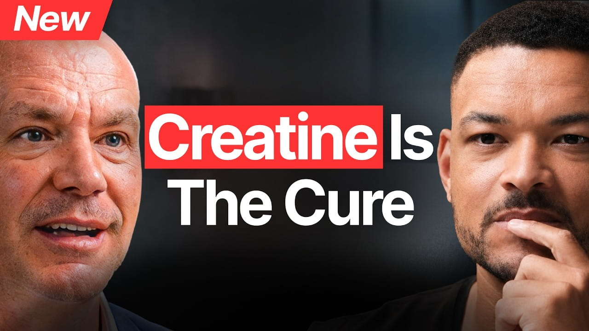

Anti-Aging Expert: Creatine Is The Fat Loss Secret Doctors Don’t Tell You - Dr. Darren Candow

Summary
In this discussion, emphasis will be put on discussing creatine, an evidence-based supplement that has various impacts on muscle performance, bone structure, and brain functionality. The supplement is involved in energy metabolism in the body as it helps regenerate ATP quickly, a compound responsible for producing energy. This process makes creatine suitable for activities that require intensive use of energy. Creatine can be obtained naturally from the body as well as from food sources, mainly meat and fish.
The discussion highlights the rectification of popular misconceptions related to the intake of creatine. Various studies indicate that there is no danger of developing kidney problems, water retention, or muscle pain from taking creatine supplements if done according to instructions. On the contrary, creatine has always proven to be effective in enhancing muscle strength and athletic performance especially during resistance exercise.
In addition to its effects on performance, creatine is linked to positive effects on bone mineralization and neurological activity, particularly during times of stress, lack of sleep, or age. It becomes clear from the discussion that varying methods can be used to consume creatine based on personal goals, which may include muscle mass increase or cognitive function improvement. In general, it is portrayed as a safe supplement supported by research that positively impacts health in multiple areas.
Speaker /(Guest): Dr. Darren Candow
Interviewer / Host: Steven
Bartlett
Concept of the Interview: Creatine supplementation, aging, fat loss, and overall health
optimization
Personal Opinion
I am somewhat familiar with creatine, as I previously used it regularly during my gym training routine before starting university. From personal experience, I took around 5g daily and noticed improved energy levels and training performance after consistent use. However, it is not an immediate supplement, as it took a few weeks before I observed noticeable effects. The difference also became clear after I stopped using it, as my strength levels slightly decreased compared to when I was on it. I also believe there is a common misconception that creatine causes hair loss, which I did not experience personally. Overall, I view it as a reliable performance supplement when used correctly.
Reflection
This interview reinforced my understanding that creatine is not a short-term performance booster but a supplement that works through gradual physiological changes. It helped me better understand the importance of consistency in supplementation and training, as effects are only visible after saturation over time. I also learned to critically evaluate common myths, especially those spread online about side effects like hair loss. Moving forward, I will be more informed when considering supplements and more aware of how scientific evidence can differ from public perception and misinformation.
Date I Watched the Interview
July 17, 2026
New Vocabulary
- Ergogenic aid: a substance or method that enhances athletic performance.
- Anabolic: relating to or promoting the building up of complex substances in the body.
- Neurocognitive: relating to or affecting the cognitive functions of the nervous system.
- Phosphocreatine system: a biochemical system in muscle cells that provides energy for short bursts of high-intensity exercise.